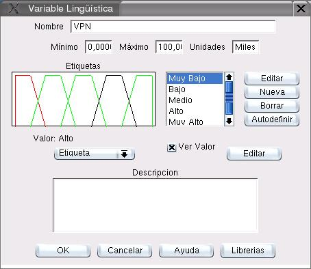

Para definir el Valor que se le asigna a cada variable en cad Caso, debe accederse al cuadro de diálogo de Edición de Variables Lingüísticas (ver seccion 6.1). Esto se logra por cualquiera de las siguientes vías:
- Mediante la opción de menú:
Proyecto  Caso
Caso
Se selecciona la variable correspondiente, y se escoge la opción Editar
- Mediante cualquiera de las opciones de menú:
Ver Caso actual como red
Se hace click con el botón izquierdo del ratón sobre el nodo correspondiente.
- Mediante la opción de menú:
Ver Caso actual lista
Se hace click con el botón izquierdo del ratón sobre el renglón correspondiente.
- Mediante cualquiera de las opciones de menú:
Ver Variables del Caso actual
Se hace click con el botón izquierdo del ratón sobre el renglón correspondiente.
- Mediante cualquiera de las opciones de menú:
Ver Matriz
Se hace click con el botón izquierdo del ratón sobre la celda correspondiente.
Con cualquiera de las opciones anteriores debe desplegarse un cuadro de diálogo semejante al que muestra la figura 11.17. El tipo de valor asignado se escoge de un listado que provee las siguientes posibilidades:
- Definir el Valor como Indefinido
- Definir el Valor como número Crisp
- Definir el Valor como un Intervalo
- Definir el Valor como un Número Difuso
- Definir el Valor como una Etiqueta Lingüística
El Valor correpondiente se asigna con la opción Editar. El Valor asignado puede visualizarse en color negro activando la opción Ver Valor.
Figura 11.17:
Edición de Variables Lingüísticas
|

|
Oscar Duarte
2005-10-17